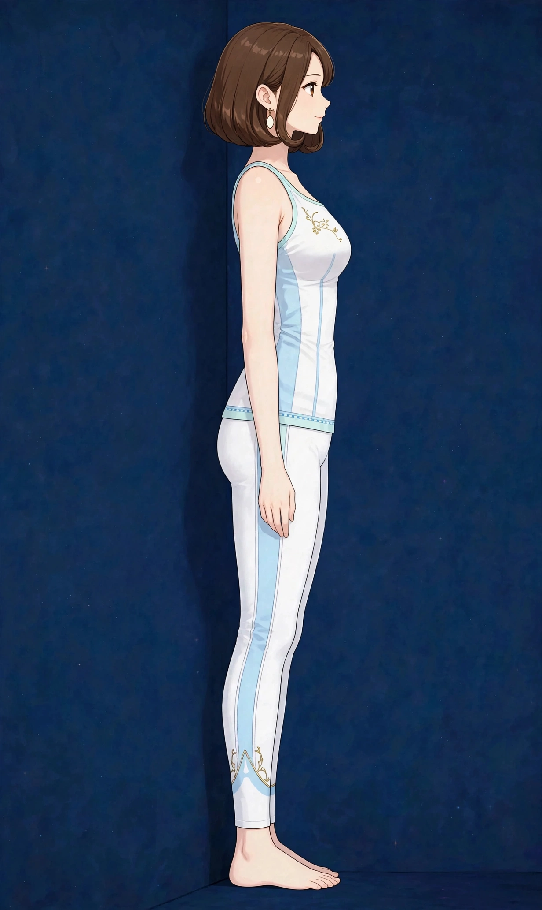
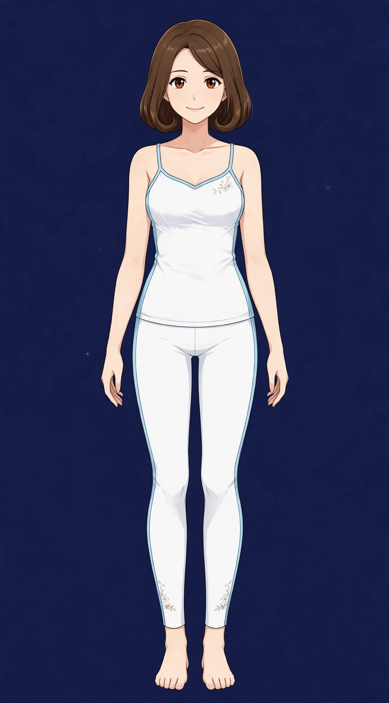

梅田で運動不足の体の硬さケア｜動かさない日が続いた体に疲労・張り

在宅勤務が増え、休日も家で過ごす日が続いたら、体が別人のように硬くなっていた——運動不足の硬さは、気づいたときには全身に及んでいます。しゃがむ、振り向く、腕を上げる。日常の小さな動きのぎこちなさが、そのサインです。
運動不足の体の硬さはどんな状態か
運動不足による体の硬さは、筋肉や関節を動かす機会が減ることで、可動域が少しずつ狭くなり、体全体が「動かしにくい」状態になったものです。特定の場所の痛みというより、前屈が届かない、背中が丸まる、股関節が開かないといった、全身の動きの変化として表れます。
ポイントは、硬さがさらに運動不足を呼ぶ悪循環です。体が硬いと動くことが億劫になり、動かないからますます硬くなる。この循環を断つには、強い運動ではなく「動かす機会を取り戻す」ことから始める必要があります。ほぐすケアは、その入口として有効です。
こんなサインはありませんか？ — 運動不足の体の硬さのチェックリスト
- 前屈で床に手が届かなくなった
- しゃがむ動作がつらく感じる
- 振り向くときに体ごと向きを変える
- 腕を真上に上げると突っ張る
- 歩幅が小さくなった気がする
- 階段の上り下りで体が重い
- 朝起きたとき体全体が固い
- 運動を再開したいが体がついていくか不安だ
当てはまる項目が多いほど、負担がたまりやすい生活が続いている可能性があります。次の「要因」と見比べて、どこに負担が集まっているか確かめてみてください。
運動不足の体の硬さにつながりやすい要因
- 可動域を使う機会の減少：関節や筋肉は、動かす範囲でその柔らかさを保ちます。使わない範囲から少しずつ硬くなっていくのが、運動不足の硬さの進み方です。
- 座り時間の長さ：一日の大半を座って過ごす生活は、股関節や太もも裏、背中を縮んだ位置で固定します。硬さの中心は座り姿勢の場所と一致します。
- 筋肉量の低下：動かさない筋肉は支える力も落ちます。支えが弱いと、体は固めることで代償するため、硬さがさらに進みます。
- 巡りの低下：体を動かすことは巡りを促す基本です。運動不足では巡りも落ち、疲労物質が残りやすい状態が続きます。
- 体重の変化：活動量の低下に伴う体重の変化は、関節への負担を増やします。負担が増えると動くことがさらに億劫になる循環があります。
- 再開への心理的な壁：硬くなった体では運動の再開自体が不安になります。「痛めそう」という心配が、運動不足を長引かせる要因にもなります。
図1｜運動不足で硬くなりやすい体の部位

東洋医学から見た考え方
東洋医学では、体は巡ることで柔らかさを保つものと捉えます。動かさない生活は「気血の巡りの滞り」を招き、硬さや重さとして表れると考えます。ほぐして巡らせることは、動きを取り戻すための土台作りです。
お腹を通る任脈や脚の胃経など、全身のラインを一巡させるように施術ではケアします。硬さの強い場所を確認しながら、動かしやすい状態を作ることを目指します。
代表的なツボ
運動不足の体の硬さのケアでよく挙げられるツボを紹介します。全身の巡りを促す、代表的なツボです。
図2｜体の硬さのケアで挙げられるツボ
おすすめ施術
美容整体＋オイルマッサージ
全身をほぐしながら、硬さの強い場所と動かしにくい方向を確認します。可動域の確認を通じて、体のどこから動かし始めるとよいかが見えてきます。
進め方は、背中や股関節まわりなど、座り姿勢で縮こまった場所を中心にほぐし、全身のバランスを整える流れです。施術後に体を動かしたときの感覚の変化を一緒に確認します。
運動の再開を考えている方には、無理のない始め方の目安もお伝えします。ほぐすケアは運動の代わりにはなりませんが、再開の入口の負担を下げる役割があります。
硬さの改善は、一度の大きな変化ではなく、小さな可動域の回復の積み重ねです。前屈であと数センチ届くようになった、振り向きやすくなった——そうした小さな変化を目安に、焦らず続けることが大切です。施術では、その変化を一緒に確認する時間も取ります。動かす機会を取り戻すことが、巡りと硬さの両方への答えになります。まずは今日、背伸びひとつから始めてみてください。
自宅でできるセルフケア
運動不足のセルフケアは「小さく、毎日、痛くない範囲で」が基本です。急に激しい運動を再開すると痛める原因になります。関節の強い痛みや、動かせないほどの硬さがある場合は、医療機関にご相談ください。
- 1．ラジオ体操の習慣全身をまんべんなく動かす基本の運動です。朝の数分からで構いません。続けることが可動域を取り戻す近道です。
- 2．股関節の開閉運動仰向けで両膝を立て、膝を開いて閉じる動きを10回。座り姿勢で固定された股関節を動かします。
- 3．背中の丸め伸ばし四つ這いで背中を丸める・反らす動きをゆっくり5回。背骨まわりの硬さをほぐす基本の動きです。
- 4．一駅歩く日を作る週に数日、いつもより多く歩く日を作ります。運動を特別な行事にせず、生活の中に戻す工夫です。
図3｜セルフケア「背中の丸め伸ばし」の手順
場面別の注意
在宅勤務が中心の方
通勤の歩行が消えた分、体を動かす機会は意識して作る必要があります。昼休みの散歩を固定の予定にしてください。
運動を再開したい方
再開は「物足りないくらい」から始めるのが安全です。硬さが強い場所は、施術でほぐしてから動かす順番も有効です。
休日も家で過ごす方
家の中でも体操やストレッチの時間は作れます。時間を決めてアラームをかけるなど、習慣化の仕掛けを使ってください。
受診の目安
次のような場合は、サロンでのケアの前に医療機関への受診をおすすめします。
- 関節が腫れて熱を持ち、動かすと強く痛む
- 特定の関節だけが急に動かなくなった
- 硬さに加えて手足のしびれがある
- 転倒やけがのあとから動きが悪くなった
- 発熱を伴う関節の痛みがある
当店は医療機関ではなく、診断は行いません。迷うときは、まずかかりつけの医療機関にご相談ください。
よくある質問
Q．全身の疲れのページとの違いは？
全身の疲れのページは疲労感を中心に、このページは「硬さと動きにくさ」に絞って解説しています。疲れよりも体の硬さが気になる方は、こちらのページが合います。
Q．施術だけで柔らかくなりますか？
施術で一時的に動かしやすくなることはありますが、柔らかさを保つには日常で動かすことの積み重ねが必要です。施術は、その再開を助ける入口としてご利用ください。
Q．運動が苦手でも大丈夫ですか？
はい。当店のケアは運動指導の場ではなく、ほぐす施術が中心です。セルフケアも、体操レベルの小さな動きからお伝えします。
Q．パーソナルトレーニングのような指導はありますか？
当店は施術のサロンです。運動の本格的な指導は行っていませんが、体の硬さの状態に合わせた日常動作の工夫はお伝えできます。
関連するお悩みページ
関連する経絡ページ
ご予約
ステラポラリス（大阪・梅田／女性専用）｜オイルマッサージ 90分 10,000円｜月〜土 17:00〜22:00・完全予約制・中崎町駅徒歩5分
ご予約はLINE公式アカウントで受け付けています。希望の日時と、気になる場所を送ってください。
さらに学びたい方へ：現場で使われる専門書（PR）
このページのテーマに合わせて選んだ本と、当店の施術でも参考にしている専門書です。


※本ブロックのリンクはAmazonアソシエイト・プログラムおよび楽天アフィリエイトによる広告リンクです。使用感の保証をするものではありません。